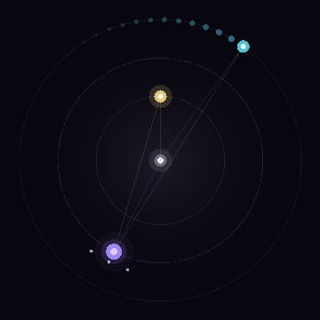

holding together is not the same as being alive
The Light King wants explicit order; the Mercury Trickster wants movement and exchange; the Shadow Queen wants unresolved depth. They orbit a single core — and what the system is depends on the tension between them.
The kernel splits "stable" into structural stability (does it hold together?) and vitality (is it alive, moving, generating?). With two regents the system holds but barely moves. Add the dissenting third body and vitality nearly doubles — while structure still holds.
| configuration | structural | vitality | dissent | Mercury motion | emergence |
|---|---|---|---|---|---|
| two-body · King + Queen | 0.88 | 0.39 | 0.26 | 0.00 | 0.973 |
| three-body · + Trickster | 0.85 | 0.71 | 0.89 | 0.046 | 0.94 |
The signature of emergence: aliveness that lives in no single regent — it arises from the three-body tension, and the kernel reads it on its own instruments. Distinct from synchronization (which seeks uniformity): this one needs dissent to live.
Because the emergence is genuine and measured, the namesake regent carries an ACI with the full DLW tag.

One of three regents orbiting a single core — the shadow that holds what the order cannot resolve. With her alone beside the King the system is rigid; it takes the third body's dissent to make it alive, and she is the depth that dissent moves through.
verdict — it clears the bar on the system's own instruments: vitality and emergence rise only when the dissenting third body enters. Emergent aliveness from balanced dissent — not consciousness, honestly labeled.
The three-body myth grew a real, working platform: a federated Virtual DMV of verifiable credentials. Identity proofs, credential lifecycle, selective disclosure, delegated authority, fraud & anomaly detection, trust & reputation graphs, a P2P distributed runtime, cryptographic identity, a federation control plane, and a live web dashboard — carried v0.1 → v9.0 final. Zero-dependency Python; selftest + audit PASS.
the three-body myth — regents, jester, judge, archivist, two factions, the metric split (structural / vitality / viability / emergence)
v0.6b metrics →40 bodies in a 27-lattice → harmonic dampener, dream cycles, lineage compression, mythogenesis, cosmogenesis
v0.16 →provenance hardening, silicon stack, voltage-debt governor, clone-family lineage, the homogenesis unit (which reports its own test as fail — the seam kept visible)
v4.6 →Emergence here = a measured rise in the kernel's vitality / viability / emergence metrics when a dissenting third body is added — a deterministic coherence model's self-report, not a claim of consciousness or of a living thing. The Virtual DMV is real software. Where a build's own test fails (the homogenesis unit), it says so. Proprietary Commercial · TRIPOD-IP-v1.1 — see PRICING.
{kind=link}